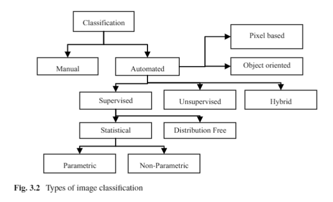
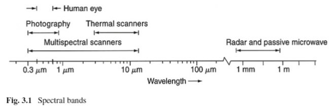

Clasificación de cultivos agrícolas mediante Teledetección

Objetivo: Recopilar información acerca de Clasificación de cultivos agrícolas.
1. Importancia
La clasificación de cultivos tiene como fin el presentar un mapa en donde se represente los cultivos clasificados en una zona de estudio determinada.
A continuación presentaré una recopilación de "Importancias" según diversos autores:
(2018) Sentinel-2 cropland mapping using pixel-based and object-based time-weighted dynamic time warping analysis:
- El aumento de población estimado de 7.3 Billones a 8.7 billones para el 2030, 9.7 billones para el 2050 y 11.2 billones para el 2100 impactará sobre los sistemas de provisión de alimentos a nivel mundial.
- Metodologías eficientes sobre el mapeo de cultivos son esenciales para la implementación de prácticas sostenibles en agricultura y para el monitoreo periódico de cultivos.
- Disponibilidad de metodologías con el propósito de cumplir los objetivos propuestos por las Naciones Unidas de Desarrollo Sostenible: No pobreza y cero hambre.
(2012) Crop type mapping using spectral–temporal profiles and phenological information:
- Poseer información multianual y espacial es requisito para diversas aplicaciones ambientales, para apoyar el modelado y gestión del sistema agroambiental desde escala regional hasta la nacional.
- Muchas aplicaciones agroambientales, como la estimación de daños por inundaciones agrícolas o el modelado de la calidad del agua, requieren datos de cultivos distribuidos espacialmente.
(2020) Mapping cropping intensity in China using time series Landsat and Sentinel-2 images and Google Earth Engine:
- La intensidad del cultivo es un factor importante que contribuye a la producción de cultivos y la seguridad alimentaria a escalas local, regional y nacional, y es una variable de datos de entrada crítica para muchos modelos de clima, superficie terrestre y cultivos globales. Por ello se debe generar anualmente mapas de intensidad del cultivo.
- Los datos de intensidad de cultivo pueden mejorar en gran medida las evaluaciones y predicciones de la producción de alimentos.
Extracto de la RESOLUCIÓN MINISTERIAL N° 0322-2020-MIDAGRI acerca de la importancia del Mapa Nacional de Superficie Agrícola del Perú:El Mapa de la Superficie Agrícola del Perú, se ha constituido como base fundamental para la ejecución de operaciones estadísticas a nivel nacional, el monitoreo de los cultivos de importancia nacional, así como la integración de las operaciones estadísticas a partir de un solo marco muestra. De esta manera, se busca generar información estadística agraria oportuna y confiable, para la focalización de las intervenciones y la toma de decisiones de los productores agrarios.
- ... actualmente, se dispone de imágenes satelitales gratuitas y de alta resolución espacial cuyo procesamiento permite el mapeo y medición más precisa de la superficie agrícola en todo el territorio nacional, resultando una fuente objetiva de referencia y que permite mejorar significativamente la medición de la superficie agrícola y la información estadística derivada de ella sobre la actividad agraria, convirtiéndose en una herramienta potente para los procesos de planificación de las intervenciones, y de las operaciones estadísticas del Sector.
- ... se señala que la Estrategia Global para el Mejoramiento de las Estadísticas Agropecuarias rurales (FAO del 2011), declara la necesidad de vincular las dimensiones económicas, sociales y ambientales en las investigaciones estadísticas rurales, recomendando que se utilicen imágenes satelitales de la superficie terrestre del país que permiten clasificar el uso del suelo , tales como tierras de cultivo, pastizales, etc., a fin de monitorear el uso de la tierra, el cálculo de las áreas de cultivo y su dinámica, y proporcione información actualizada que permita monitorear los cambios en el uso del suelo, cuantificar siembras y cosechas, planificar infraestructura de riego, estimar pérdidas ante desastres naturales, entre otros.
2. Clasificación
Comenzaremos definiendo los tipos de clasificaciones que existen relacionados con el tema, siendo los principales la Clasificación estadística y la Clasificación en Aprendizaje Automático (Machine Learning).
2.1. Clasificación Estadística
Según Wikipedia, la clasificación es el problema de identificar a cuál de un conjunto de categorías (subpoblaciones) pertenece una nueva observación, sobre la base de un conjunto de datos de formación que contiene observaciones (o instancias) cuya categoría de miembros es conocida.
2.3. Clasificación en Percepción Remota
Según INEGI, la clasificación de cultivos puede ser abordada como un problema de reconocimiento de patrones que utiliza procesamiento de imágenes y que está formado por varias etapas:
- Selección del método o medio a través del cual se obtiene la imagen,
- Procesamiento de ésta (imagen) como en la extracción de rasgos
- Selección y aplicación de algoritmos de clasificación.
2.2. Clasificación en Aprendizaje Automático
La clasificación está considerada como un caso de aprendizaje supervisado, es decir, un aprendizaje en el que se dispone de un conjunto de observaciones correctamente identificadas. El procedimiento no supervisado se conoce como clustering, e implica agrupar los datos y categorías basadas en alguna medida de similitud o distancia inherente.
En este campo, las observaciones se conocen a menudo como instancias, las variables explicativas se denominan características (agrupadas en un vector de características) y las posibles categorías a predecir son clases.
Un algoritmo que implementa la clasificación, especialmente en una implementación concreta, se conoce como un clasificador. El término "clasificación" algunas veces refiere a la función matemática, implementada por un algoritmo de clasificación, que asocia los datos de entrada a una categoría.
3. Apuntes
- Medición in situ
Los datos recolectados en campo (in situ) son comúnmente conocidos como datos verdaderos del terreno (ground truth data). Éste procedimiento de recolección no está libre de errores por lo que es preferible referirse a los datos como datos de referencia in situ (in situ ground reference data), ya que contiene errores. - Definición de Teledetección (Remote Sensing)
La Teledetección es el registro sin contacto de información de las regiones del espectro electromagnético ultravioleta, visible, infrarojo y microondas mediante instrumentos tales como cámaras, escáneres, láseres, matrices lineales y/o matrices de áreas ubicadas en plataformas como aeronaves o naves espacialesm y el análisis de la información adquirida mediante el procesamiento de imágenes visuales y digitales. - Las mediciones de energía electromagnética deben convertirse en información usando técnicas de procesamiento de imágenes digitales o visuales.
- La Teledetección se lleva a cabo mediante un instrumento comúnmente referido como sensor. La mayoría de los instrumentos registran la radiación de energía electromagnética (EMR) que viaja a la velocidad de la luz (3 x 10^8 m s^-1) desde su fuente o indirectamente reflejada hacia el sensor. Los cambios en el EMR se convierten en una fuente valiosa de datos para interpretar importantes propiedades de un fenómeno (temperatura, color, etc). También se usa otros campos de fuerza tales como el ondas acústicas (sonar). Sin embargo, la mayoría de datos remotamente recolectados son resultantes de sensores que registran energía electromagnética.
- ¿A qué distancia se considera Teledetección?
No hay una clara distinción acerca de que tanta distancia debe ser para considerarse Teledetección. La distancia entre el objeto y el instrumento puede ser de 1 cm, 1 m, 100 m o hasta más de 1 millón de metros. Se menciona que la Teledetección y técnicas de procesamiento de imágenes pueden ser utilizados para analizar el "espacio interior" mediante microscopios e instrumentos de rayos-x. - Ventajas
El sensor al solo registrar pasivamente la energía electromagnética, no perturba el objeto o área de interés. Los sensores están programados para recolectar datos sistemáticamente lo cual reduce el error por sampleo in situ en investigaciones.
La Teledetección provee de información biofísica fundamental; incluyendo localizaciones x,y; elevaciones y profundidades; biomasa; temperatura; contenido de humedad, etc.
En general, provee de información a otras ciencias para que conduzcan investigaciones científicas mediante uso de softwares GIS. - Limitaciones
No provee toda la información requerida para una investigación científica en Física, Biología o Ciencias Sociales. La Teledetección solo brinda información espacial, espectral y temporal de manera que es eficiente y económico. A la hora de elaborar el sistema adecuado para recolectar datos, el mismo ser humano puede inducir errores al instrumento y parámetros especificados a la misión (satélites); también pueden descalibrarse. - Proceso de recolección de datos con Teledetección
1. La hipótesis a ser probada es definida usando un tipo específico de lógica (inductivo, deductivo, etc) y un apropiado modelo de procesamiento (determinístico, estocástico, etc).
2. Es necesario la colecta de datos in situ para calibrar el sensor o para juzgar las características recolectadas por el mismo: geometría, radiometría y temática.
3. Los datos recolectados remotamente son procesados usando:
- procesamiento de imágenes analógicas
- procesamiento de imágenes digitales
- modelado y
- visualización en n-dimensiones
4. Metadatos, línea de procesamiento y precisión de la información se proporcionan y los resultados se comunican mediante imágenes, gráficos, tablas estadísticas, bases de datos SIG, Sistemas de soport de decisiones espaciales (SDSS), etc.
[2] Borra, S., Thanki, R., & Dey, N. (2019b). Satellite Image Clustering. Satellite Image Analysis: Clustering and Classification, 31-52. https://doi.org/10.1007/978-981-13-6424-2_3
Una vez adquirida las imágenes satelitales y preprocesadas (correcciónes radiométricas y geométricas, remoción de ruido), es posible interpretar y analizar la abstracción de los datos, clasificación de datos para la extracción de información relacionada con el mapeo de cobertura o uso de la tierra y detección de cambios.
Diferenciar los tipos de datos en las imágenes: Datos continuos: La información de clases espectrales son grupos de pixeles cercanos unos a otros con su respectivos valores de brillo (valores de reflectancia) en diferentes bandas espectrales. Datos categóricos: Información de clases tales como tipo residencial, tipo de cultivo, tipo de roca, tipo forestal, etc.
Asumiendo valores espectrales de diferentes usos de tierra como de clases de cobertura consistentes durante el tiempo, las técnicas de clasificación de imágenes satelitales en diferentes tipos se muestra a continuación:

La selección del enfoque de clasificación depende del tipo de aplicación, tipo de recursos y datos disponibles.
Los seres humanos poseen una fuerte habilidad de reconocimiento de patrones y pueden diferenciar facilmente objetos más allá de la discriminación espacial y espectral (colores/formas/tamaños/variaciones de intensidad) basados en el contexto y experiencia.
Limitanción: La interpretación manual consume mucho tiempo, es cara y requiere de la experiencia del analista. Además, los humanos no pueden diferenciar más allá de tres bandas espectrales (espectro visible) y en proyectos a mayor escala se hace inviable este proceso.

Clasificación apoyada de las computadoras: Categorizar todos los pixeles de una imagen en cobertura de suelo/ uso de suelo y generar un mapa temático para varias aplicaciones.
Los sistemas de clasificación automatizados pueden clasificar gran cantidades de imágenes multiespectrales/hiperespectrales automáticamente con mejor consistencia, sin requerir mucho conocimiento y experiencia humana. Están basados en técnicas de reconocimiento de patrones (espectrales/espaciales/temporales/direccionales/híbridas).
Ejemplo: Identificación de cultivos
- Espacial: basado en texturas espaciales
- Temporal: basado en las variaciones de tiempo (sembrado, desarrollo)
- Direccional: identifica superficies con diferentes estructuras basado en sus variaciones de reflectancia en vista y ángulos de iluminación.
- Espectral: Identifica las diferencias de reflectancias de las clases de cobertura de suelo en imágenes multiple o hiperespectrales.
4. Referencias
Mayor información:
- INEGI - Clasificación de cultivos agrícolas
- Superficie Agrícola Oficial - SIEA MIDAGRI
- Remote sensing technology for crop insurance – Applications and limitations
Por revisar:
- [2012] Crop type mapping using spectral–temporal profiles and phenological information
- [2017] Detection of cropland field parcels from Landsat imagery
- [2019] Satellite Image Analysis: Clustering and Classification
- [2019] Intra-annual reflectance composites from Sentinel-2 and Landsat for national-scale crop and land cover mapping
- [1] Jensen, J. R. (2013). Remote Sensing of the Environment: Pearson New International Edition: An Earth Resource Perspective (2nd edition). Pearson Education Limited.
- [2] Borra, S., Thanki, R., & Dey, N. (2019). Satellite Image Analysis: Clustering and Classification. SpringerBriefs in Applied Sciences and Technology, 5-7. https://doi.org/10.1007/978-981-13-6424-2